activity: My brother engages in a variety of sports activities.
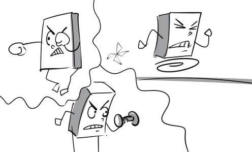
aspect: The greatest aspect of this aspirin is that it doesn't make you sleep.

creativity: The actor's creativity in representing his character makes everybody very surprised.
daily routine: Teeth brushing is a part of our daily routine.

desire: The director desires that his company's turnover would increase by 70% in the next 6 months.

disappointment: Peter expressed his disappointment when his date didn't show up.
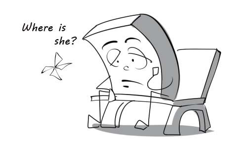
experience: Live concert is an enjoyable experience for me.

fulfillment: Winning this championship is the fulfillment of his longtime ambition.
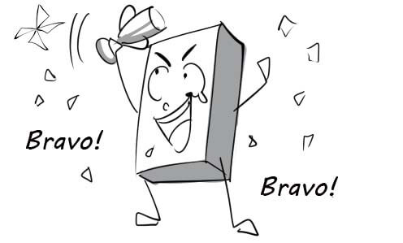
goal: His short-term career goal is to find a high-paid job.

hobby: Playing football is my biggest hobby.

insight: The customer insight shows that they have many questions about English. We build website EEZY to answer them all.

leisure: People with too much leisure always find their lives so boring.
lifestyle: David has a very unhealthy lifestyle. He does nothing but drink all day.
optimist: He is still happy when his team loses the game. What an optimist he is!

outlook: The oriental and the occidental have different outlooks on marriage.

opportunity: You will have an opportunity to win a car when you buy our product.
personality: This girl is very beautiful but she has a very bad personality.

pessimist: The pessimist thinks he will fail the exam although he did a good job.

priority: For many recruiters, their top priority is to find someone who is fluent in English.
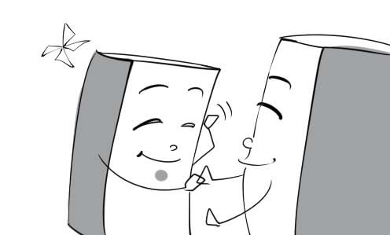
pressure: The pressure of work makes me crazy.
realist: Being a realist, Daisy would rather marry an ugly but rich man than a handsome but poor one.
risk-taker: The risk-taker is performing a dangerous stunt with his car.
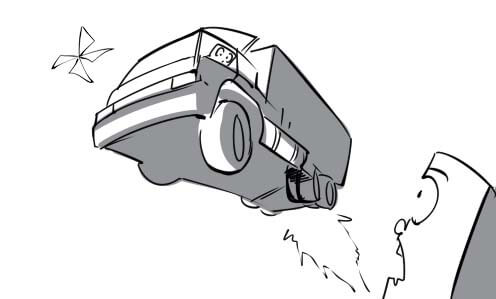
self-expression: Andrew draws self-portraits for his own enjoyment and self-expression.
sense: Mary can smell a different perfume on her husband thanks to her keen sense of smell.
active: My grandfather is still very active although he is 70 years old.
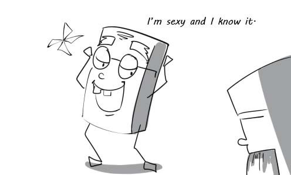
dreamy: My brother is dreamy. He always comes up with weird things.
well-educated: My company just recruits well-educated employees.
painstaking: Peter is a painstaking man. He always prepares his luggage carefully before every trip.

confused: I am quite confused right now and don't know which way to go yet.

attract: Many guys are attracted by Katy's charming appearance.
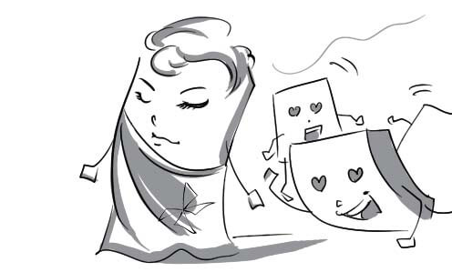
moderate: Remember to moderate your appetite if you want to lose some weight.
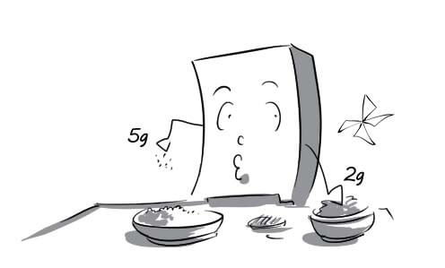
motivate: Peter is motivated entirely by the big sum of money they will pay him.
regret: The little boy regretted having lied to his mother about his results.
relax: I usually go to a spa to relax every Sunday.
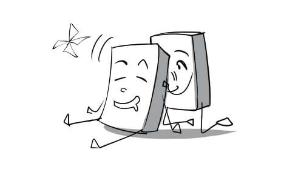
satisfy: Peter buys many presents for his girlfriend to satisfy her.
assignment: I have to stay up all night to finish my assignment because the deadline is tomorrow.
boredom: Although I nearly died of boredom, I kept listening to his cheesy stories.

certificate: The principal is handing graduate certificates to the students.
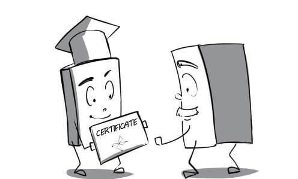
college: My brother decided to study at the college of tourism.

controversy: There was a big controversy among students over the bizarre artwork.

curriculum: This year's curriculum consists of many challenging subjects such as algebra, geometry…
dissertation: The student is upholding his dissertation in front of the professors.
education: In Vietnam, everybody has to finish general education in order to get a good job.
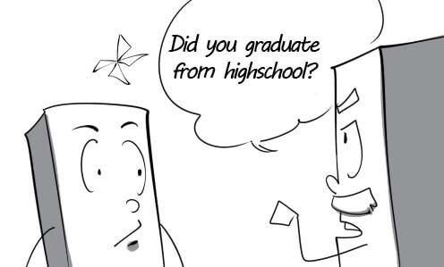
exam: My friend cheats on the history exam because he didn't study anything at all.

field: The professor cannot answer this question because it is outside his field.
finding: The survey's finding gave us some insight into consumer needs.
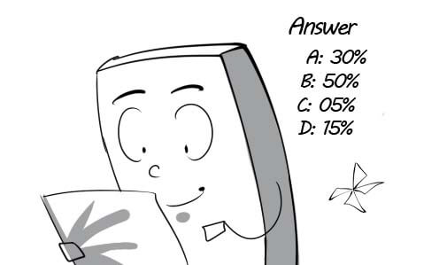
funding: My team received funding for our scientific research.
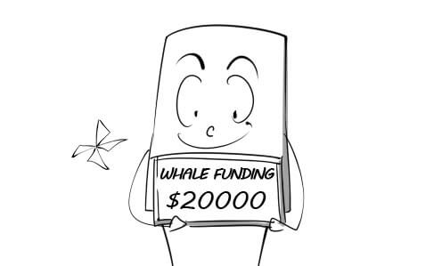
grade: My son's grades have been improved remarkably in such a short time.

grant: We decided to award a grant to poor students who got good grades.

high school: Le Hong Phong is one of the best high schools in Ho Chi Minh city.

homework: My son tried to do his homework on his own although it was quite difficult.

kindergarten: In kindergartens, children can learn to communicate, play and interact with others

learning disorder: It's hard for Tommy to understand the lesson because he has a learning disorder.

lecturer: This lecturer has been teaching at my university for almost 20 years.
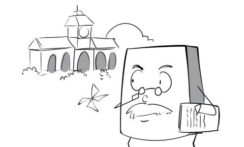
library: I went to the library to borrow some books.
prodigy: My son is a child prodigy in mathematics.
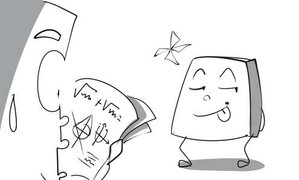
Master: My brother is a Master of Business Administration.

nursery: Mary sent her child to a nursery because she had to return to work.

PhD: I want to become a PhD in mathematics before I turn 30.

primary school: In Vietnam, children normally start going to primary school at the age of six.

project: I am doing a school project on how to save energy.
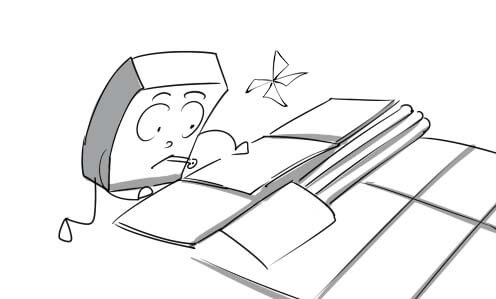
research: I am conducting some research on the daily routine of birds.

resources: His parents used all their financial resources to send him to Harvard.

result: The student was really shocked when he saw his exam results.

scholarship: The poor student won a full scholarship to study at Harvard.
scope: Everybody is surprised at his wide scope of mathematical knowledge.
secondary school: In secondary schools, students are prepared for the entrance exam to universities.

source: You should acknowledge your sources at the end of your essay.
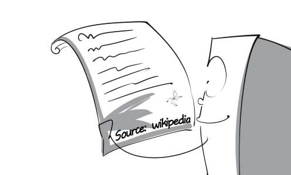
syllabus: According to the syllabus, I have to read many difficult books.
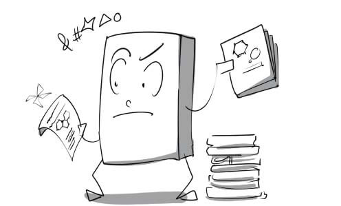
tuition: I went to the office of academic affairs to submit my tuition.
theory: The students got bored because the teacher just taught theories without giving illustrations.

tutor: My strict tutor always gives me a lot of exercises to do.
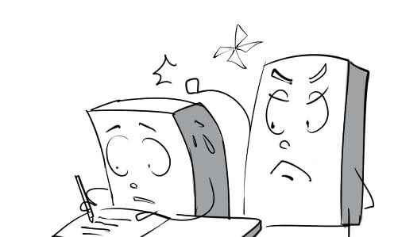
university: After finishing college, Tuan applied for an undergraduate course in the university.

compulsory: In developed countries, schooling is compulsory for all children from the age of 5 to 16.
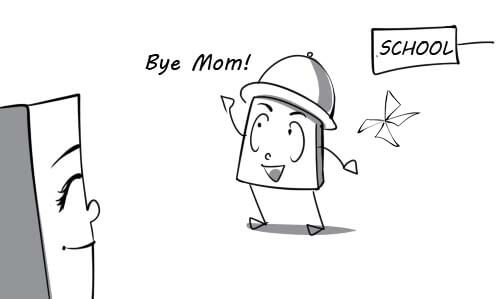
academic: In my country, the academic year begins in September and ends in May.
eligible: In Vietnam, you are eligible to vote when you are 18 years old.

mixed: My children are studying at a mixed school.
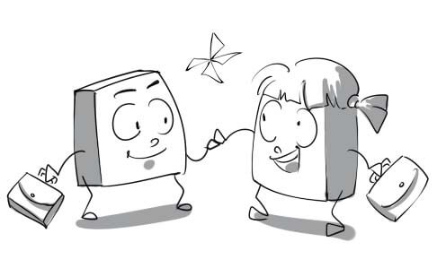
postgraduate: After graduating from the university, Peter applies for a postgraduate course.
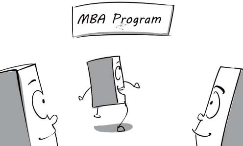
relevant: The interviewer asks me if I have the relevant experience.

senior: In my school, senior students are respected by younger ones.
single-sex: My parents sent me to a single-sex school because they didn’t want me to play with boys.

studious: The studious student always comes to the library to study on the weekend.

work-related: My company will pay all the work-related expenses.

adopt: The student adopted a new learning method in order to learn more effectively.

analyse: The studentis analysing water samples in the laboratory.

conduct: My company is conducting a survey on the customers.

concentrate: David is concentrating on the assignment so don't bother him.
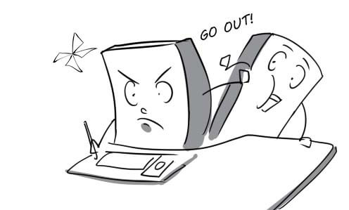
consider: Tuan is considering selling his laptop because he is out of money.

find out: Daisy found out about the money that her husband hid under the bed.

graduate: Kate graduated with first-class honours from medical school last year.
neglect: David neglects his studies and just concentrates on how to make money.

organise: The graduation ceremony will be organised at the hall tomorrow.

review: Phong reviews his paper one more time before submitting it.
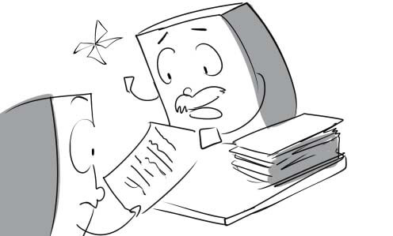
revise: The teacher asked me to revise my essay because it had too many mistakes.

struggle: Peter is struggling to finish the test because it is too difficult.
relatively: The train was relatively empty although it was the tourist season.